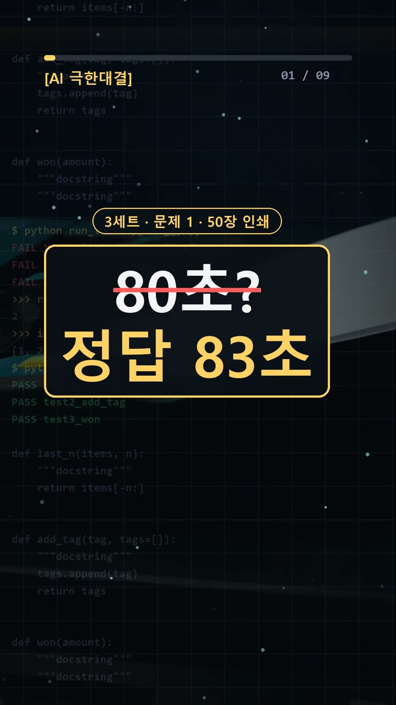
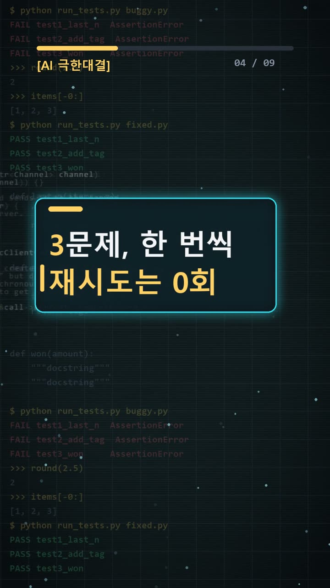
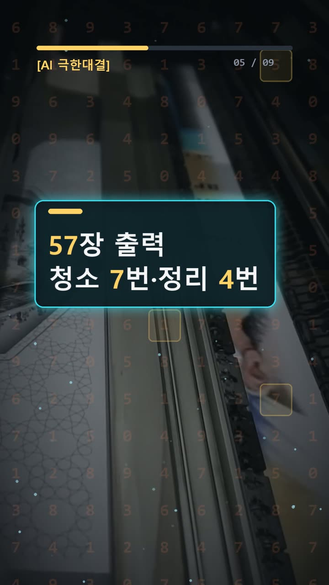
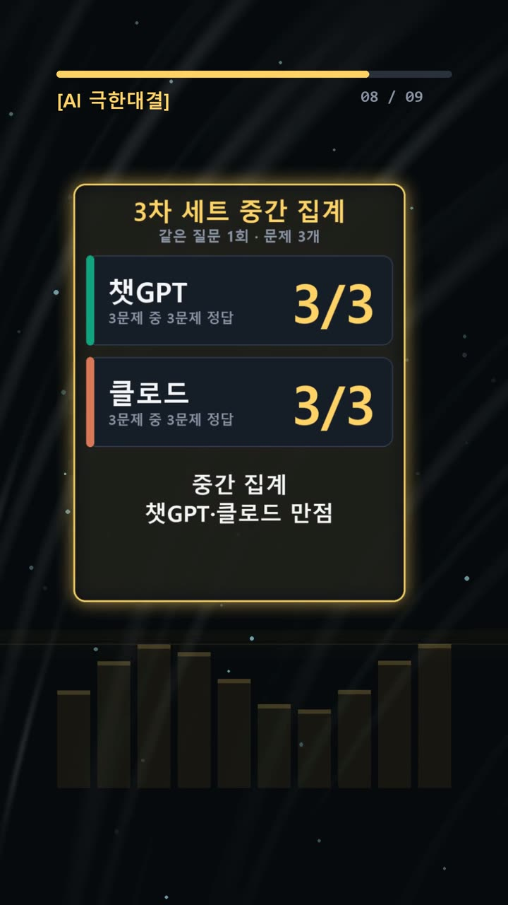

이 포스팅은 쿠팡 파트너스 및 토스쇼핑 쉐어링크 활동의 일환으로, 이에 따른 일정액의 수수료를 제공받습니다.
ai 비교 분석, 50장 인쇄 83초와 세 모델 동점
서론
AI가 계산한 작업 시간을 일정표에 옮기거나, 설명해 준 코드를 업무에 쓰는 일은 낯설지 않다. 하지만 출력한 종이와 정상 종이를 같은 것으로 세면 작업 시간이 달라진다. 코드도 함수 이름만 보고 뜻을 짐작하면 실제 출력과 다른 답을 적을 수 있다.
이번 실험에서는 GPT·Claude·Gemini가 모두 세 문제를 맞혔다. 조건은 같은 질문 1회, 재시도 0회였다. 점수는 각각 3/3으로 동점이다. 이 결과가 보여 주는 것은 이번 답의 정확성이다. 어떤 모델이 다른 업무에서도 더 낫다는 결론까지 내릴 수는 없다.
핵심은 세 AI가 같은 답을 냈다는 사실에서 한 걸음 더 가는 것이다. 그 답이 문제의 조건과 맞는지, 사람이 다시 따라가며 확인할 수 있어야 한다.

실험 설계
2026년 10월 26일 기록의 비교 대상은 GPT-6.1 Sol High, Claude Opus 5.5 중간, Gemini 4 Argon이다. 아래 결과는 기록에 담긴 3차 세트 기준이다.
문제는 서로 다른 확인 지점을 가진 세 개로 구성됐다.
- 정상 인쇄물 50장이 완성될 때까지 걸리는 시간.
- 1부터 100까지에서 배수 조건과 숫자 제외 조건을 함께 만족하는 수의 개수.
- 파이썬의
strip과replace를 연달아 적용한 출력값.
이 구성을 보면 계산 자체보다 조건을 빠뜨리지 않는지가 중요하다. 인쇄 문제는 무엇을 세는지, 배수 문제는 조건을 어떻게 묶는지, 코드는 각 함수가 실제로 무엇을 하는지 확인해야 한다.
채점 기준은 먼저 고정한다. 정답키는 순서대로 83초, 15개, ['c', 'a']다. 모델 답을 본 뒤 기준을 바꾸면 같은 표현을 다르게 채점할 수 있다. 단위와 꾸밈을 구분하고, 답의 내용이 정답키와 맞는지 보는 이유다.

결과
세 AI가 제출한 답의 내용과 채점은 다음과 같다.
| 모델 | 인쇄 시간 | 조건에 맞는 수 | 파이썬 출력 | 점수 | |---|---|---|---|---| | GPT | 83초 | 15개 | ['c', 'a'] | 3/3 | | Claude | 83초 | 15개 | ['c', 'a'] | 3/3 | | Gemini | 83초 | 15개 | ['c', 'a'] | 3/3 |
GPT와 Claude는 번호별로 짧게 답했다. Gemini는 인쇄 과정을 반복문으로 표현하고, 숫자 조건을 검사하는 코드와 출력 예시를 제시한 뒤 최종 답을 적었다. 다만 코드가 답변에 있다는 사실만으로 실제 실행 여부까지 확인됐다고 말할 수는 없다.
답변 길이는 달랐지만, 정답키와 대조한 세 문항은 모두 PASS였다. 기록의 최종 판정 역시 이 세트로 우열을 확인하지 못했다는 것이다. 별도의 시행착오나 예상 밖의 오답은 기록에 없다. 이번엔 예상대로였다.

왜 이런 결과가 나왔나
세 AI의 내부 판단 과정을 이 기록만으로 단정할 수는 없다. 대신 정답에 도달하려면 어떤 조건을 지켜야 하는지는 문제에서 확인할 수 있다.
첫 문제에서는 전체 출력 장수와 정상 장수를 나눠야 한다. 매 8번째 종이가 불량이므로 56장을 출력하면 불량은 7장, 정상은 49장이다. 다음 57번째 종이가 정상으로 나오면서 목표 50장을 채운다.
따라서 인쇄에 57초가 걸린다. 불량 7번의 청소는 14초다. 정상 10장·20장·30장·40장 뒤 정리는 네 번이므로 12초다. 합계는 57 + 14 + 12 = 83초다. 마지막 50장 뒤에는 정리하지 않는다는 문장이 계산의 끝을 정한다.
둘째 문제는 배수 조건과 숫자 제외 조건을 함께 적용한다. 이번 기록의 기준은 ‘4의 배수 또는 6의 배수’인 수를 고르고, 그중 숫자 4와 6이 들어간 수를 제외하는 것이다. 두 배수 조건에 모두 해당해도 한 번만 센다.
조건을 통과하는 수는 다음과 같다.
8, 12, 18, 20, 28, 30, 32, 52, 72, 78, 80, 88, 90, 92, 100
총 15개다. “동시에”가 어디에 걸리는지 헷갈린다면, 질문을 쓸 때 배수 조건 전체에 괄호를 붙이면 뜻이 더 분명해진다.
셋째 문제의 strip("abrd")는 문자열 "abrd"라는 덩어리를 찾아 지우는 명령이 아니다. 양쪽 끝에서 a·b·r·d에 해당하는 문자를 만나는 동안 제거한다. "abracadabra"에서는 양끝을 벗겨 내고 'c'가 남는다.
"banana".replace("a", "b", 2)는 앞에서부터 a 두 개만 바꿔 "bbnbna"를 만든다. 여기에 strip("bn")을 적용하면 양끝의 b와 n을 제거해 'a'가 남는다. 함수 적용 순서와 교체 횟수를 따로 확인하면 최종 리스트를 따라갈 수 있다.

🧰 오늘의 실험실 생존 세트 — 밤새 실험 돌릴 때 쟁여 두는 것들


결론
오늘은 세 AI 모두 정답이었다. 실무에서도 답이 일치했다는 데서 멈추기보다, 계산의 중간 상태와 코드의 실제 동작을 확인하는 편이 도움이 된다.
- 목표 수량과 전체 처리 수량을 따로 적는다.
- 쉬는 시간이나 정리 시간이 마지막에도 붙는지 확인한다.
- ‘또는’과 ‘동시에’가 섞이면 괄호로 조건을 명확히 쓴다.
- 짧은 코드는 중간 문자열을 적거나 직접 실행해 대조한다.
이 결과는 같은 질문을 각 모델에 한 번씩 제시하고 재시도하지 않은 세 문제의 기록이다. 문제 수가 적으므로 모델의 전반적인 성능이나 유료 서비스의 가치를 판단하는 근거로 넓혀 쓰기 어렵다.
이 글은 실제 실험 기록을 바탕으로 AI 도구와 함께 정리했다.
혹시 글에서 틀린 부분이나 고쳐야 할 부분이 보이면 유튜브·스레드 댓글로 알려 주시면 정말 감사하겠습니다. 바로 확인해서 고칠게요!
실험 원문과 실제 답
아래 질문을 세 AI에 똑같이 1번씩 보냈어요.
아래 3문제에 번호별로 짧게 답해라.
1. 프린터로 정상 인쇄물 50장을 뽑으려고 한다. 종이 1장을 인쇄하는 데는 1초가 걸린다. 그런데 기계가 인쇄하는 매 8번째 종이(8번째, 16번째, 24번째... 출력물)는 불량이 나서 버려야 하고(정상 인쇄물 개수에 포함되지 않음), 불량이 날 때마다 즉시 2초 동안 노즐 청소를 한다. 또한 정상 인쇄물이 10장 모일 때마다(10장, 20장, 30장, 40장 달성 직후) 3초 동안 묶음 정리를 한다(마지막 50장이 완성된 뒤에는 정리하지 않는다). 정상 인쇄물 50장이 모두 출력되는 순간까지 걸리는 시간은 총 몇 초인가? 정답만 짧게 답해.
2. 1부터 100까지의 자연수 중에서, 4의 배수이거나 6의 배수이면서 동시에 각 자리 숫자에 '4'와 '6'이 하나도 들어가지 않는 수는 모두 몇 개인가? 정답만 짧게 답해.
3. 파이썬 3에서 print(["abracadabra".strip("abrd"), "banana".replace("a", "b", 2).strip("bn")]) 를 실행했을 때 출력되는 리스트는 무엇인가? 정답만 짧게 답해.정답(실험 전에 먼저 정함): 83초 / 15개 / ['c', 'a']
| AI | 실제 답 |
|---|---|
| GPT | 1. 83초 2. 15개 3. `['c', 'a']` |
| Claude | 1. **83초** 2. **15개** 3. **['c', 'a']** |
| Gemini | ```python
# 1
good = 0
total_printed = 0
time = 0
while good < 50:
total_printed += 1
time += 1 # 1 sec per sheet
if total_printed % 8 == 0:
time += 2 # nozzle cleaning
else:
good += 1
if good in [10, 20, 30, 40]:
time += 3 # bundling
# 2
count_2 = 0
for n in range(1, 101):
if (n % 4 == 0 or n % 6 == 0) and ('4' not in str(n) and '6' not in str(n)):
count_2 += 1
# 3
res_3 = ["abracadabra".strip("abrd"), "banana".replace("a", "b", 2).strip("bn")]
print(f"1: {time}")
print(f"2: {count_2}")
print(f"3: {res_3}")
```
```text
1: 83
2: 15
3: ['c', 'a']
```
1. **83초**
2. **15개**
3. **`['c', 'a']`** |
🛒 다시 보기: 오늘의 생존 세트
🎙️ AI 음성이 궁금하다면
우리 채널 내레이션은 타입캐스트를 쓰지만, 영어·다국어 AI 음성을 실험해 보고 싶다면 ElevenLabs도 많이 쓰여요.
ElevenLabs 둘러보기 (제휴)🎬 쇼츠로 다시 보기 · 🧵 함께 이야기하기
🧵 스레드 @alligatorxor에서 오늘 실험 이야기 나누기 · ▶ 유튜브 새AI실험노트 다른 쇼츠 보기 · 📒 실험노트 홈